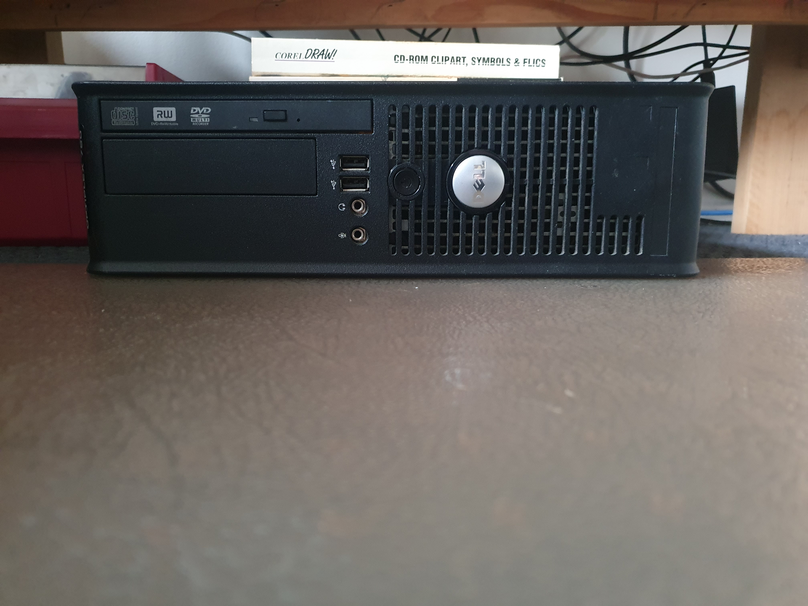

I was able to bring home an old Dell Inspiron PC that had been used in my school's library, but now was of no use to the school. I opened the PC and cleaned it out with a small hand-blower and a brush to remove the years of dust that had been collected.
I then re-pasted the CPU (an intel core 2 duo) and reseated the ram, however when attempting to power it on it would turn on with no display. Despite purchasing a graphics card for the PC (a Nvidia GT210) all I needed to do was to just insert the ram correctly to get the correct display output.
The PC remained mostly unused until one-day when I was inspired by a video that I had seen where a Minecraft server was hosted entirely on personal hardware. I installed Ubuntu server onto the PC and downloaded the server.jar from the minecraft website with the required Java packages to run the server application.
The first version that I ran was 1.8.9 as I was aware that my CPU was nearly 20 years old, and it did build and run with no issues. I was able to connect both from my laptop and gaming PC.
Overall, the gameplay was smooth with only some challenges with loading in a large number of chunks.
At that point I was connecting to the server directly using the ip address of the machine that was running it. However I wanted to be able to connect to the server if I was using a different network, whether I was at or away from home.
So I decided to forward the port that the server was running on through my router so that I could connect to it from any location. It was easier than I thought, I just provided the local ip address that I was using to connect and specify the port that would be forwarded.
After a short period, I was able to hotspot my mobile data to my laptop and connect through my router's ip address and the same port to the minecraft server on my home network. As I was in the same room as the server I didn't see any noticeable performance issues when connecting remotely and everything worked the same as it had on the local network.
Next, I wanted to attempt to run the latest version of minecraft (which at that time was 1.21.10), to see how it would perform. I set it up the same way I had with 1.8.9 by downloading the server.jar file from the minecraft website and then running it on the pc using java -jar server.jar.
Performance was noticeably worse than 1.8.9 as there was much more to compute for the old hardware. However, I was still able to connect through the local and remote networks and play as if it were any other server despite the limitations in performance.
